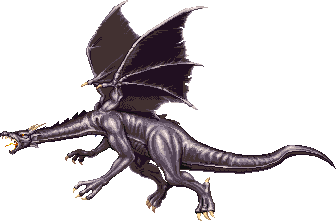
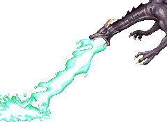
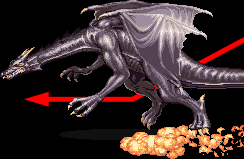
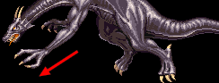
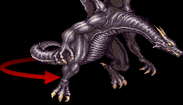
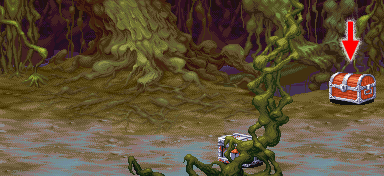

BLACK DRAGON
|  미로의 숲 (스테이지 8-A) 보스 '블랙 드래곤' |
기본 정보
전투 도중 랜덤으로 얻을 수 있는 아이템
 (scale of the dragon) (scale of the dragon)클리어 시간 측정의 시작 시점
플레이어가 움직일 수 있는 순간부터
최단 시간 클리어 기록
시프 4:47 |
|||||||||
드랍 가능한 아이템 - 돈 + 점수 아이템 + 그외 아이템의 구성으로 떨어진다.
돈 : 10sp x1 + 1sp x5 (15sp) / 5sp x3 + 1sp x3 (18sp) / 50sp x1 (50sp) / 100sp x1 (100sp)
| 점수 아이템 : | |
| 반지류 : | |
| 장비류 : | |
그린 드래곤과 함께 크로마틱 계열의 사악한 드래곤이다.
그린 드래곤에서 머리가 좀 바뀌고 색깔만 바뀌었다고 봐도 될 정도로 특성과 패턴이 거의 똑같지만 상대적으로 훨씬 많은 HP때문에 브레쓰를 내뿜는 동안에 공략하지 못하면 그만큼 더 어려워 진다.
그대신 이제부터는 상점에서 LB오일이라는 대 보스용 최강 병기를 구입해서 가져올 수 있기 때문에 공략법만 안다면 거기서 거기라 할 수 있겠다.
그린 드래곤에서 머리가 좀 바뀌고 색깔만 바뀌었다고 봐도 될 정도로 특성과 패턴이 거의 똑같지만 상대적으로 훨씬 많은 HP때문에 브레쓰를 내뿜는 동안에 공략하지 못하면 그만큼 더 어려워 진다.
그대신 이제부터는 상점에서 LB오일이라는 대 보스용 최강 병기를 구입해서 가져올 수 있기 때문에 공략법만 안다면 거기서 거기라 할 수 있겠다.
드래곤의 비늘
파이터, 클레릭, 드워프, 엘프가 줏어서 다음에 나오는 상점주인에게 가져다 준다면 드래곤의 방패로 교환받는데 드래곤의 방패 자체도 별 쓸모가 없지만 그 때문에 디스플레이서 망토를 버려야 하니 줏을 가치는 거의 없다 (팔 수라도 있으면 모르겠는데 그것도 안되니).
대신 시프, 매직 유저가 가져다 준다면 디스플레이서 망토로 교환받는다. 2인 이상 플레이시 나왔다면 시프나 매직 유저가 줏어서 교환받도록 하자.
대신 시프, 매직 유저가 가져다 준다면 디스플레이서 망토로 교환받는다. 2인 이상 플레이시 나왔다면 시프나 매직 유저가 줏어서 교환받도록 하자.
패턴 분석
※ 붉은색은 파이터가 입는 데미지, 푸른색은 매직 유저가 입는 데미지.
클레릭/드워프는 파이터에 가까운 데미지를, 시프/엘프는 매직 유저에 가까운 데미지를 입는다.
그린 드래곤과 똑같지 않냐고 해도 어쩔 수 없다. 브레쓰 형태가 다른 것 빼곤 진짜로 거의 똑같다.
산성 브레쓰 (33/50)
그린 드래곤과 마찬가지로 배 밑으로 파고들거나 화면 맨위로 이동하면 피할 수 있다. 배 밑 공간이 좀 더 넓어서 그린 드래곤 때 처럼 브레쓰를 피하기 위해 그림자 위쪽에 위치 할 필요는 없지만 2, 3차 브레쓰를 내뿜을 때는 배 밑으로 확실히 파고 들거나 아니면 화면 맨 위로 붙어야 한다. 괜히 머리맡에 있다가는 브레쓰에 닿을 수 있다.
많은 데미지를 줄 수 있는 절호의 찬스이기도 하지만 위아래로 움직이기 때문에 공격이 빗나가는 경우가 꽤 있다. 2,3차 브레쓰를 내뿜기 직전에 공격을 당하면 고도가 고정되는 경우도 간혹 있다.
플레이어가 주문, 혹은 마법 도구를 쓸 경우 브레쓰가 끊기게 된다. 이 점을 꼭 명심하도록 한다.
2차 브레쓰를 쓰는 타이밍의 실제 HP바
3차 브레쓰를 쓰는 타이밍의 실제 HP바
클레릭/드워프는 파이터에 가까운 데미지를, 시프/엘프는 매직 유저에 가까운 데미지를 입는다.
그린 드래곤과 똑같지 않냐고 해도 어쩔 수 없다. 브레쓰 형태가 다른 것 빼곤 진짜로 거의 똑같다.
산성 브레쓰 (33/50)

녹색의 강한 산성 액체를 내뿜는다. 1차로 전투가 시작하자 마자 내뿜으며 2차/3차는 각각 HP가 50%/25%가 남았을 때 내뿜는다. 브레쓰에 닿을 경우 제법 많은 데미지를 입으며 잠시 마비상태가 된다 (녹지 않는게 다행).그린 드래곤과 마찬가지로 배 밑으로 파고들거나 화면 맨위로 이동하면 피할 수 있다. 배 밑 공간이 좀 더 넓어서 그린 드래곤 때 처럼 브레쓰를 피하기 위해 그림자 위쪽에 위치 할 필요는 없지만 2, 3차 브레쓰를 내뿜을 때는 배 밑으로 확실히 파고 들거나 아니면 화면 맨 위로 붙어야 한다. 괜히 머리맡에 있다가는 브레쓰에 닿을 수 있다.
많은 데미지를 줄 수 있는 절호의 찬스이기도 하지만 위아래로 움직이기 때문에 공격이 빗나가는 경우가 꽤 있다. 2,3차 브레쓰를 내뿜기 직전에 공격을 당하면 고도가 고정되는 경우도 간혹 있다.
플레이어가 주문, 혹은 마법 도구를 쓸 경우 브레쓰가 끊기게 된다. 이 점을 꼭 명심하도록 한다.
2차 브레쓰를 쓰는 타이밍의 실제 HP바
| 1인 플레이시 | |
| 2인 플레이시 | |
| 3인 플레이시 | |
| 4인 플레이시 | |
3차 브레쓰를 쓰는 타이밍의 실제 HP바
| 1인 플레이시 | |
| 2인 플레이시 | |
| 3인 플레이시 | |
| 4인 플레이시 | |
| 돌진 (25/38) | |
|  | 살짝 물러섰다가 플레이어를 향해 급강하 하면서 돌진한다. 판정이 무척 넓기 때문에 예측하고 움직이지 않으면 위아래로 피하기도 힘든 편이다. 그림자 치기로 피하는 것 따위는 기대하지 않는게 좋다. 가장 위험한 공격이다. 가드가 가능하기 때문에 방패가 있다면 가드를 하는게 그나마 피해를 막을 수 있다. 돌진 거리가 꽤 길기 때문에 시프, 매직 유저의 경우 백스텝으로 피하기도 어려운 편이다. 브레쓰를 다시 뿜을 때 까지 접근하지 못하도록 슬링으로 견제하거나 남은 주문을 전부 날려주는게 좋다. |
| 할퀴기 (23/34) | |
|  | 앞발로 플레이어를 할퀸다. 빠르고 연속으로 공격이 들어오기 때문에 역시 위험하며 가드가 가능하니 가드를 하거나 방패가 없다면 아예 접근하지 못하게 먼거리에서 견제하자. |
| 꼬리치기 (23/34) | |
|  | 순간 몸을 돌리면서 꼬리를 플레이어 쪽으로 휘두르는데 범위안에 들어와 있다면 데미지를 입게 된다. 거리가 있다 생각되도 순간 접근해서 공격이 들어오고 판정도 넓기 때문에 생각보다 위험한 공격이다. 돌격을 예상하고 가드를 하고 있는데 이 공격이 들어오면 방패 범위를 넘어서 공격이 들어와서 데미지를 입기도 한다. 특별한 대책이 없는 난감한 공격이다. |
기타 특성
브레쓰를 내밷고 있는 도중을 제외하면 한대 맞은 후에 움찔움찔 하는데 그동안은 무적이 된다. 따라서 연속 공격이 거의 들어가지 않는다고 보면 된다.
공통 공략법
브레쓰를 내뿜는 도중에 끝내는게 가장 좋다. 미리 아이템을 준비 해 두고 움직일 수 있게 되면 재빨리 블랙드래곤 밑으로 파고들어서 공격하면 된다. 파고들때는 슬라이딩으로 하도록 한다. 대쉬 부딪치면
뒤로 튕기면서 브레쓰에 닿을 수 있기 때문이다.
브레쓰를 내뿜는 도중에 블랙 드래곤에게 빠르게 데미지를 입히는 방법은 세가지가 있다.
① 상자의 낙석 트랩 이용
아래 스샷에 보이는 위쪽 상자를 열면 꽤 높은 확률로 낙석이 일어난다. 블랙 드래곤은 공중에 떠 있기 때문에 떨어지는 바위를 여러발 맞게 되어서 대략 최대 248(?) 가량 데미지를 입힐 수 있다.
다만 트랩이 안걸려 있는 경우도 종종 있고 또한 블랙 드래곤의 위치와 바위가 떨어지는 형태에 따라 데미지 차이가 좀 있기 때문에 항상 기대할 수는 없다.
② LB오일 + 해머 이용
블랙 드래곤이 최대한 지면과 가까울 때 명중하면 가장 데미지를 많이 입지만 블랙 드래곤의 고도가 계속 바뀌기도 하고 또 타이밍을 노리기에는 브레쓰를 내뿜는 시간이 그리 길지 않으니 그냥 빠르게 던지는게 무난하다.
매직 유저와 드워프를 제외한 클래스는 그 후에 해머를 연이어 던져서 더욱 많은 데미지를 줄 수 있다.
③ 원더 에그(wonder egg) 이용
원더 에그(Egg of Wonder)가 가장 유용하게 쓰이는 시점이다. 블랙 드래곤에게 2배의 데미지를 주며 브레쓰를 내뿜는 동안은 3배의 데미지를 주기 때문이다. 또한 던지는 순간 무적상태가 되기 때문에 상자를 열고 낙석을 유도 했들 때 블랙 드래곤이 더 잘 맞도록 위치를 잡을 수도 있다.
브레쓰를 내뿜는 도중에 블랙 드래곤에게 빠르게 데미지를 입히는 방법은 세가지가 있다.
① 상자의 낙석 트랩 이용
아래 스샷에 보이는 위쪽 상자를 열면 꽤 높은 확률로 낙석이 일어난다. 블랙 드래곤은 공중에 떠 있기 때문에 떨어지는 바위를 여러발 맞게 되어서 대략 최대 248(?) 가량 데미지를 입힐 수 있다.
다만 트랩이 안걸려 있는 경우도 종종 있고 또한 블랙 드래곤의 위치와 바위가 떨어지는 형태에 따라 데미지 차이가 좀 있기 때문에 항상 기대할 수는 없다.

② LB오일 + 해머 이용
블랙 드래곤이 최대한 지면과 가까울 때 명중하면 가장 데미지를 많이 입지만 블랙 드래곤의 고도가 계속 바뀌기도 하고 또 타이밍을 노리기에는 브레쓰를 내뿜는 시간이 그리 길지 않으니 그냥 빠르게 던지는게 무난하다.
매직 유저와 드워프를 제외한 클래스는 그 후에 해머를 연이어 던져서 더욱 많은 데미지를 줄 수 있다.
③ 원더 에그(wonder egg) 이용
원더 에그(Egg of Wonder)가 가장 유용하게 쓰이는 시점이다. 블랙 드래곤에게 2배의 데미지를 주며 브레쓰를 내뿜는 동안은 3배의 데미지를 주기 때문이다. 또한 던지는 순간 무적상태가 되기 때문에 상자를 열고 낙석을 유도 했들 때 블랙 드래곤이 더 잘 맞도록 위치를 잡을 수도 있다.